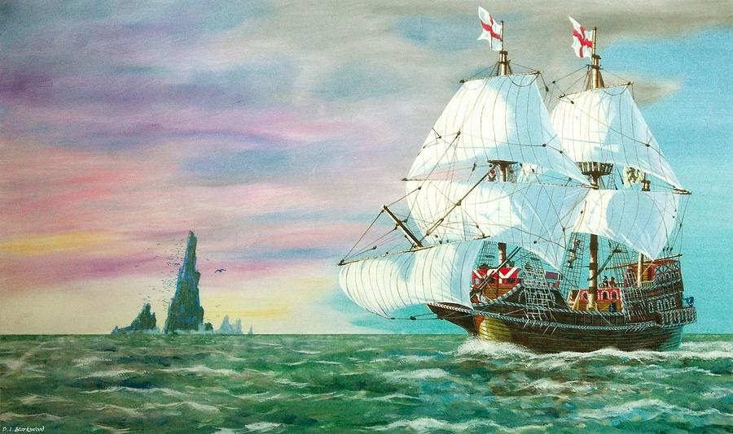

Галеон «Золотая лань»
Что касается знаменитого галеона Фрэнсиса Дрейка «Золотая лань», который обогнул земной шар вторым в истории, то мы можем полюбоваться не только его изображениями, но и точно изготовленными копиями. Самую известную реплику корабля можно увидеть в Лондоне на южном берегу Темзы в районе Southwark. Кстати, эта копия «Золотой лани» не просто музей на воде, в 1973 году корабль прошел вокруг света путем своего предшественника.
Кругосветная экспедиция Фрэнсиса Дрейка с «Золотой ланью» во главе частично повторила судьбу магелланового путешествия на каракке «Виктория». Галеон стал единственным кораблем из экспедиции, который сумел пройти пролив Дрейка на самом юге Южной Америки.
Кстати, свое название корабль получил как раз после этого события, изначально он именовался «Пеликаном». Размеры галеона были весьма скромными — всего 36,5 метров в длину и до 7 метров в ширину. Однако вооружено это военное судно было куда лучше своих знаменитых предшественников: на его борту размещались 22 пушки.